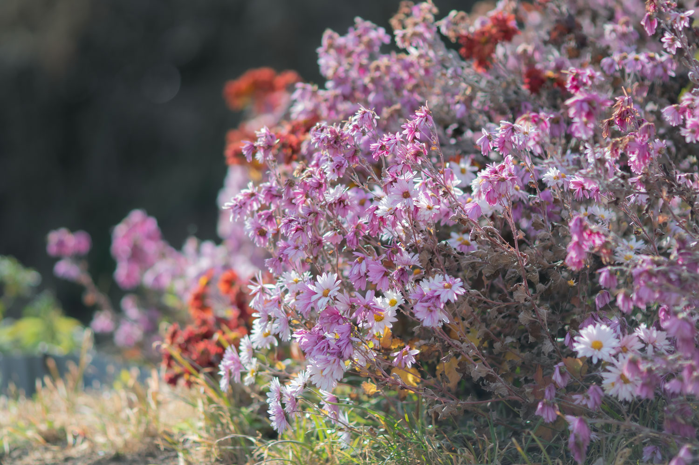

Japan
花言葉の歴史は、17世紀頃のトルコで始まったとされています。当時、恋人への贈り物として、言葉や文字ではなく、花に思いを託す風習がありました。この風習がヨーロッパに広がり、花に意味が込められるようになり、花言葉として発展しました。日本には明治時代に西洋文化とともに伝わり、次第に日本独自の解釈や花言葉も生まれるようになりました
The custom of enjoying flowers through the use of the language of flowers was introduced to Japan in the early Meiji period. Initially, the imported flower meanings were used as they were, but over time, uniquely Japanese interpretations began to emerge. As early as the beginning of the 20th century, Kanji Tadera published Hanakotoba (Ryomeido Shoten, 1909), presenting original Japanese flower meanings. Even today, many dictionaries and reference books on flower language continue to be published in Japan.


scroll
scroll
scroll
scroll
scroll
world
花言葉の歴史は、17世紀頃のトルコで始まったとされています。当時、恋人への贈り物として、言葉や文字ではなく、花に思いを託す風習がありました。この風習がヨーロッパに広がり、花に意味が込められるようになり、花言葉として発展しました。日本には明治時代に西洋文化とともに伝わり、次第に日本独自の解釈や花言葉も生まれるようになりました
The history of the language of flowers is believed to have begun in 17th-century Turkey. At the time, there was a custom of conveying feelings through flowers instead of words or letters, especially as gifts for lovers. This tradition spread to Europe, where specific meanings were assigned to flowers, eventually developing into what we now know as the language of flowers. It was introduced to Japan during the Meiji era along with Western culture, and over time, Japan created its own unique interpretations and flower meanings.
花言葉
花言葉は時には勇気を、時には恐怖をも感じさせる
一つ一つの花に、花言葉をつけた人との物語が存在する
The language of flowers can sometimes inspire courage, and at other times evoke fear. Behind each flower and its meaning lies a story shared with the person who gave it that name.